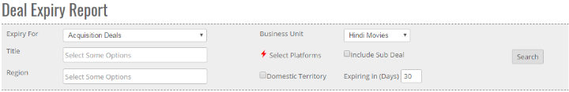
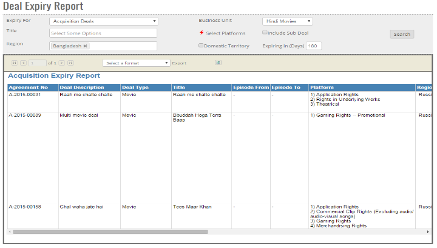


	<section>
		<article>
			<h2>Deal Expiry Report<span></span></h2>
			<div>
				<p></p>

				<p>Deal expiry report is useful in knowing which deals are approaching its expiration. User can search by different criterias provided in the deal expiry report.</p>

				<div class="triangle-border top">				
					
				</div>

				<p><b>Expiry For</b> - It includes 2 options. Acquisition Deals and Syndication Deals. User can select for which deals they want to see expiry for.</p>

				<p><b>Business Unit</b> - If user wants to search for records for specific business unit, this can be used. Based on Expiry For and Business Unit, titles will be populated in search of Title.</p>

				<p><b>Title</b> - User can select single or multiple titles in search bar and based on it report will be generated.</p>

				<p><b>Include Sub Deal</b> - If there is a sub deal for a title and user wants to include it in search, they can use it.</p>

				<p><b>Select Platforms</b> - If user wants to perform search for specific platforms, click on the link. This will open platform popup. User can select as many platforms as they want to.</p>

				<p><b>Domestic Territory</b> - If user wants to include Indian Domestic Circuit deals, this option can be used. When user clicks on this option, Region will become as Indian Circuits.</p>

				<p><b>Region</b> - By default, region will include Country and Territory. User can select single or multiple country/territory and based on that results will be generated.</p>

				<p><b>Expiry in Days</b> - User can enter for how many number of days they want to see the expiry for. For example, if you want to include deals expiring in 90 days, enter 90 in this field.</p>

				<div class="triangle-border top">				
					
				</div>
				
			</div>
		</article>
	</section>